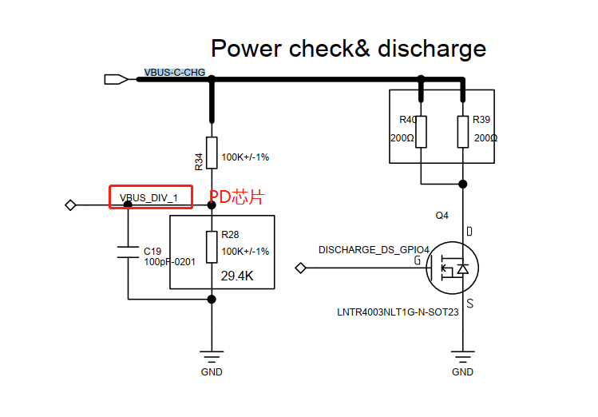

概述
R15问题汇总
1.开机第一次R15不枚举
原因是PDM应用调用了
wakeup旧接口，M50是vbus控制，没做特殊处理，电源被关闭了。
main log:
行 9950: 12-28 17:42:47.760623 559 559 D paxdroid.hardware.paxservice@1.0-service: wakeup sp
行 9975: 12-28 17:42:47.814496 559 559 D paxdroid.hardware.paxservice@1.0-service: set status
行 11003: 12-28 17:42:52.369429 559 559 D paxdroid.hardware.paxservice@1.0-service: wakeup sp
行 11050: 12-28 17:42:52.518846 559 559 D paxdroid.hardware.paxservice@1.0-service: wakeup sp
行 11116: 12-28 17:42:52.661498 559 559 D paxdroid.hardware.paxservice@1.0-service: wakeup sp
行 11131: 12-28 17:42:52.676141 559 559 D paxdroid.hardware.paxservice@1.0-service: wakeup sp
kernel log:
行 1254: <7>[ 28.136931] (3)[559:paxservice@1.0-][pax_gpio]: ioctl set r15 status: 0x3
行 1256: <7>[ 28.136959] (3)[559:paxservice@1.0-][pax_gpio]: SET_POWER_STATUS: 1
行 1258: <7>[ 28.136962] (3)[559:paxservice@1.0-][pax_gpio]: power_en: 1, set_value = 3
行 1304: <7>[ 28.495032] (7)[559:paxservice@1.0-][pax_gpio]: ioctl read: 0x5
行 1305: <7>[ 28.495075] (7)[559:paxservice@1.0-][pax_gpio]: ioctl write: 0x7
行 1306: <7>[ 28.495082] (7)[559:paxservice@1.0-][pax_gpio]: set_r15_power_status = 0
行 1311: <7>[ 28.495124] (7)[559:paxservice@1.0-][pax_gpio]: SET_POWER_EN: 0
行 1315: <7>[ 28.496517] (1)[559:paxservice@1.0-][pax_gpio]: ioctl read: 0x7
行 1316: <7>[ 28.496637] (1)[559:paxservice@1.0-][pax_gpio]: ioctl write: 0x5
行 1317: <7>[ 28.496644] (1)[559:paxservice@1.0-][pax_gpio]: set_r15_power_status = 0
行 1322: <7>[ 28.496685] (1)[559:paxservice@1.0-][pax_gpio]: SET_POWER_EN: 0
行 1325: <7>[ 28.497835] (1)[559:paxservice@1.0-][pax_gpio]: ioctl read: 0x5
行 1326: <7>[ 28.497944] (1)[559:paxservice@1.0-][pax_gpio]: ioctl write: 0x7
行 1327: <7>[ 28.497951] (1)[559:paxservice@1.0-][pax_gpio]: set_r15_power_status = 0
行 1332: <7>[ 28.498018] (1)[559:paxservice@1.0-][pax_gpio]: SET_POWER_EN: 0
行 1363: <7>[ 28.548897] (1)[559:paxservice@1.0-][pax_gpio]: ioctl set r15 status: 0x1
行 1365: <7>[ 28.548925] (1)[559:paxservice@1.0-][pax_gpio]: SET_POWER_STATUS: 0
行 1367: <7>[ 28.548928] (1)[559:paxservice@1.0-][pax_gpio]: power_en: 0, set_value = 1
行 1596: <7>[ 33.103912] (3)[559:paxservice@1.0-][pax_gpio]: ioctl read: 0x7
行 1597: <7>[ 33.103979] (3)[559:paxservice@1.0-][pax_gpio]: ioctl write: 0x7
行 1598: <7>[ 33.103985] (3)[559:paxservice@1.0-][pax_gpio]: set_r15_power_status = 0
行 1603: <7>[ 33.104027] (3)[559:paxservice@1.0-][pax_gpio]: SET_POWER_EN: 0
行 1606: <7>[ 33.107579] (3)[559:paxservice@1.0-][pax_gpio]: ioctl read: 0x7
行 1607: <7>[ 33.110327] (3)[559:paxservice@1.0-][pax_gpio]: ioctl write: 0x5
行 1608: <7>[ 33.110338] (3)[559:paxservice@1.0-][pax_gpio]: set_r15_power_status = 0
行 1613: <7>[ 33.110382] (3)[559:paxservice@1.0-][pax_gpio]: SET_POWER_EN: 0
行 1616: <7>[ 33.114621] (3)[559:paxservice@1.0-][pax_gpio]: ioctl read: 0x5
行 1617: <7>[ 33.115117] (3)[559:paxservice@1.0-][pax_gpio]: ioctl write: 0x7
行 1618: <7>[ 33.115174] (3)[559:paxservice@1.0-][pax_gpio]: set_r15_power_status = 0
行 1623: <7>[ 33.115240] (3)[559:paxservice@1.0-][pax_gpio]: SET_POWER_EN: 0
行 1648: <7>[ 33.253244] (1)[559:paxservice@1.0-][pax_gpio]: ioctl read: 0x7
行 1649: <7>[ 33.253284] (1)[559:paxservice@1.0-][pax_gpio]: ioctl write: 0x7
行 1650: <7>[ 33.253291] (1)[559:paxservice@1.0-][pax_gpio]: set_r15_power_status = 0
行 1655: <7>[ 33.253349] (1)[559:paxservice@1.0-][pax_gpio]: SET_POWER_EN: 0
行 1658: <7>[ 33.255607] (3)[559:paxservice@1.0-][pax_gpio]: ioctl read: 0x7
行 1659: <7>[ 33.255693] (3)[559:paxservice@1.0-][pax_gpio]: ioctl write: 0x5
行 1660: <7>[ 33.255699] (3)[559:paxservice@1.0-][pax_gpio]: set_r15_power_status = 0
行 1665: <7>[ 33.255783] (3)[559:paxservice@1.0-][pax_gpio]: SET_POWER_EN: 0
行 1668: <7>[ 33.256977] (3)[559:paxservice@1.0-][pax_gpio]: ioctl read: 0x5
行 1669: <7>[ 33.257025] (3)[559:paxservice@1.0-][pax_gpio]: ioctl write: 0x7
行 1670: <7>[ 33.257032] (3)[559:paxservice@1.0-][pax_gpio]: set_r15_power_status = 0
行 1675: <7>[ 33.257088] (3)[559:paxservice@1.0-][pax_gpio]: SET_POWER_EN: 0
行 1678: <7>[ 33.395912] (0)[559:paxservice@1.0-][pax_gpio]: ioctl read: 0x7
行 1679: <7>[ 33.395950] (0)[559:paxservice@1.0-][pax_gpio]: ioctl write: 0x7
行 1680: <7>[ 33.395957] (0)[559:paxservice@1.0-][pax_gpio]: set_r15_power_status = 0
行 1685: <7>[ 33.396001] (0)[559:paxservice@1.0-][pax_gpio]: SET_POWER_EN: 0
行 1688: <7>[ 33.397174] (0)[559:paxservice@1.0-][pax_gpio]: ioctl read: 0x7
行 1689: <7>[ 33.397262] (0)[559:paxservice@1.0-][pax_gpio]: ioctl write: 0x5
行 1690: <7>[ 33.397270] (0)[559:paxservice@1.0-][pax_gpio]: set_r15_power_status = 0
行 1695: <7>[ 33.397330] (0)[559:paxservice@1.0-][pax_gpio]: SET_POWER_EN: 0
行 1699: <7>[ 33.398482] (0)[559:paxservice@1.0-][pax_gpio]: ioctl read: 0x5
行 1700: <7>[ 33.398548] (0)[559:paxservice@1.0-][pax_gpio]: ioctl write: 0x7
行 1701: <7>[ 33.398555] (0)[559:paxservice@1.0-][pax_gpio]: set_r15_power_status = 0
行 1706: <7>[ 33.398592] (0)[559:paxservice@1.0-][pax_gpio]: SET_POWER_EN: 0
行 1712: <7>[ 33.410565] (0)[559:paxservice@1.0-][pax_gpio]: ioctl read: 0x7
行 1713: <7>[ 33.410605] (0)[559:paxservice@1.0-][pax_gpio]: ioctl write: 0x7
行 1714: <7>[ 33.410611] (0)[559:paxservice@1.0-][pax_gpio]: set_r15_power_status = 0
行 1719: <7>[ 33.410662] (0)[559:paxservice@1.0-][pax_gpio]: SET_POWER_EN: 0
行 1722: <7>[ 33.411816] (0)[559:paxservice@1.0-][pax_gpio]: ioctl read: 0x7
行 1723: <7>[ 33.411927] (0)[559:paxservice@1.0-][pax_gpio]: ioctl write: 0x5
行 1724: <7>[ 33.411934] (0)[559:paxservice@1.0-][pax_gpio]: set_r15_power_status = 0
行 1729: <7>[ 33.411994] (0)[559:paxservice@1.0-][pax_gpio]: SET_POWER_EN: 0
行 1732: <7>[ 33.413140] (0)[559:paxservice@1.0-][pax_gpio]: ioctl read: 0x5
行 1733: <7>[ 33.413239] (0)[559:paxservice@1.0-][pax_gpio]: ioctl write: 0x7
行 1734: <7>[ 33.413246] (0)[559:paxservice@1.0-][pax_gpio]: set_r15_power_status = 0
行 1739: <7>[ 33.413298] (0)[559:paxservice@1.0-][pax_gpio]: SET_POWER_EN: 0
行 1763: <7>[ 33.653716] (0)[559:paxservice@1.0-][pax_gpio]: ioctl read: 0x7
行 1764: <7>[ 33.653772] (0)[559:paxservice@1.0-][pax_gpio]: ioctl write: 0x7
行 1765: <7>[ 33.653778] (0)[559:paxservice@1.0-][pax_gpio]: set_r15_power_status = 0
行 1770: <7>[ 33.653838] (0)[559:paxservice@1.0-][pax_gpio]: SET_POWER_EN: 0
行 1772: <7>[ 33.653866] (0)[559:paxservice@1.0-][pax_gpio]: ioctl read: 0x7
行 1773: <7>[ 33.653902] (0)[559:paxservice@1.0-][pax_gpio]: ioctl write: 0x7
行 1774: <7>[ 33.653906] (0)[559:paxservice@1.0-][pax_gpio]: set_r15_power_status = 0
行 1779: <7>[ 33.653931] (0)[559:paxservice@1.0-][pax_gpio]: SET_POWER_EN: 0
行 1781: <7>[ 33.653948] (0)[559:paxservice@1.0-][pax_gpio]: ioctl read: 0x7
行 1782: <7>[ 33.653973] (0)[559:paxservice@1.0-][pax_gpio]: ioctl write: 0x7
行 1783: <7>[ 33.653978] (0)[559:paxservice@1.0-][pax_gpio]: set_r15_power_status = 0
行 1788: <7>[ 33.653999] (0)[559:paxservice@1.0-][pax_gpio]: SET_POWER_EN: 0
行 1790: <7>[ 33.654014] (0)[559:paxservice@1.0-][pax_gpio]: ioctl read: 0x7
行 1791: <7>[ 33.654030] (0)[559:paxservice@1.0-][pax_gpio]: ioctl write: 0x5
行 1792: <7>[ 33.654098] (0)[559:paxservice@1.0-][pax_gpio]: set_r15_power_status = 0
行 1797: <7>[ 33.654120] (0)[559:paxservice@1.0-][pax_gpio]: SET_POWER_EN: 0
行 1849: <7>[ 34.162681] (0)[559:paxservice@1.0-][pax_gpio]: ioctl read: 0x5
行 1850: <7>[ 34.162723] (0)[559:paxservice@1.0-][pax_gpio]: ioctl write: 0x5
行 1851: <7>[ 34.162730] (0)[559:paxservice@1.0-][pax_gpio]: set_r15_power_status = 0
行 1856: <7>[ 34.162772] (0)[559:paxservice@1.0-][pax_gpio]: SET_POWER_EN: 0
行 1858: <7>[ 34.162798] (0)[559:paxservice@1.0-][pax_gpio]: ioctl read: 0x5
行 1859: <7>[ 34.162815] (0)[559:paxservice@1.0-][pax_gpio]: ioctl write: 0x25
行 1860: <7>[ 34.162819] (0)[559:paxservice@1.0-][pax_gpio]: set_r15_power_status = 0
行 1865: <7>[ 34.162840] (0)[559:paxservice@1.0-][pax_gpio]: SET_POWER_EN: 0
行 1867: <7>[ 34.162856] (0)[559:paxservice@1.0-][pax_gpio]: ioctl read: 0x25
行 1868: <7>[ 34.162885] (0)[559:paxservice@1.0-][pax_gpio]: ioctl write: 0x65
行 1869: <7>[ 34.162889] (0)[559:paxservice@1.0-][pax_gpio]: set_r15_power_status = 0
行 1874: <7>[ 34.162910] (0)[559:paxservice@1.0-][pax_gpio]: SET_POWER_EN: 0
行 1876: <7>[ 34.162926] (0)[559:paxservice@1.0-][pax_gpio]: ioctl read: 0x65
行 1877: <7>[ 34.162941] (0)[559:paxservice@1.0-][pax_gpio]: ioctl write: 0xe5
行 1878: <7>[ 34.162945] (0)[559:paxservice@1.0-][pax_gpio]: set_r15_power_status = 0
行 1883: <7>[ 34.162964] (0)[559:paxservice@1.0-][pax_gpio]: SET_POWER_EN: 0
行 1885: <7>[ 34.162979] (0)[559:paxservice@1.0-][pax_gpio]: ioctl read: 0xed
行 1886: <7>[ 34.162994] (0)[559:paxservice@1.0-][pax_gpio]: ioctl write: 0xef
行 1887: <7>[ 34.162998] (0)[559:paxservice@1.0-][pax_gpio]: set_r15_power_status = 0
行 1892: <7>[ 34.163017] (0)[559:paxservice@1.0-][pax_gpio]: SET_POWER_EN: 0
paxdroid\hardware\interfaces\paxservice\1.0\default\gpios\PaxGpios.cpp代码如下：
Return<int32_t> PaxApiService::wakeupRequest(void)
{
ALOGD("wakeup sp");
CHECK_GPIO_DEVICE_VALID();
/* raising pulse wakeup R20 */
mGpiosDevice->ops.set_gpio_value_by_index(PAX_GPIO_2, 1);
usleep(1000);
mGpiosDevice->ops.set_gpio_value_by_index(PAX_GPIO_2, 0);
/* add 2020.12.16, request by R20 */
usleep(1000);
mGpiosDevice->ops.set_gpio_value_by_index(PAX_GPIO_2, 1);
return 0;
}
int set_pax_gpio_value_by_index(unsigned int index, unsigned int value)
{
int ret;
unsigned int val;
CHECK_GPIO_VALID(index);
CHECK_GPIO_DIR(index, GPIO_OUTPUT);
ret = get_pax_gpio_values(&val);
if (ret != 0)
return -1;
if (value)
val |= (1<<index);
else
val &= ~(1<<index);
return set_pax_gpio_value(val);
}
int set_pax_gpio_value(unsigned int value)
{
int fd;
ALOGD("%s, value=0x%x", __func__, value);
fd = g_dev_gpios.dev_fd;
return g_dev_gpios.ops.write(fd, value);
}
static long gpios_ioctl(struct file *file, unsigned int cmd, unsigned long arg)
{
switch (cmd) {
case PAX_GPIO_IOCTL_READ:
{
value = read_gpios_value(g_pax_gpio_set);
copy_to_user((void __user *)arg, (void *)&value, sizeof(value));
PAX_GPIO_DBG("ioctl read: 0x%x", value);
ret = 0;
}
break;
case PAX_GPIO_IOCTL_WRITE:
{
copy_from_user((void *)&value, (void __user *)arg, sizeof(unsigned int));
PAX_GPIO_DBG("ioctl write: 0x%x", value);
if (strcmp(get_terminal_name(), "M50") == 0) {
r15_power_status = (value & 1<<8) >> 8;
ret = set_r15_power_status(r15_power_status);
}
value = write_gpios_value(g_pax_gpio_set, value);
ret = 0;
}
break;
}
分析以下log得知：
1.其实一开始是枚举上了，并且DTS应用设置了
online状态下来。2.PDM开机调用
wakeup接口，ioctl read状态0x5，由于R15在线，实际应该是0x105，也就是读取R15状态不对，还是gpio的状态。3.
set_pax_gpio_value_by_index中会调用set_pax_gpio_value函数重新写R15状态，这个时候由于读取出错，设置状态也相对的不对，关闭了。
kernel log:
<6>[ 6.033061] (5)[291:kworker/5:2]cdc_acm 1-1.2:1.0: ttyACM0: USB ACM device
行 9975: 12-28 17:42:47.814496 559 559 D paxdroid.hardware.paxservice@1.0-service: set status
行 1254: <7>[ 28.136931] (3)[559:paxservice@1.0-][pax_gpio]: ioctl set r15 status: 0x3
行 1256: <7>[ 28.136959] (3)[559:paxservice@1.0-][pax_gpio]: SET_POWER_STATUS: 1
行 1258: <7>[ 28.136962] (3)[559:paxservice@1.0-][pax_gpio]: power_en: 1, set_value = 3
行 11003: 12-28 17:42:52.369429 559 559 D paxdroid.hardware.paxservice@1.0-service: wakeup sp
行 1304: <7>[ 28.495032] (7)[559:paxservice@1.0-][pax_gpio]: ioctl read: 0x5
行 1305: <7>[ 28.495075] (7)[559:paxservice@1.0-][pax_gpio]: ioctl write: 0x7
行 1306: <7>[ 28.495082] (7)[559:paxservice@1.0-][pax_gpio]: set_r15_power_status = 0
行 1311: <7>[ 28.495124] (7)[559:paxservice@1.0-][pax_gpio]: SET_POWER_EN: 0
行 1315: <7>[ 28.496517] (1)[559:paxservice@1.0-][pax_gpio]: ioctl read: 0x7
行 1316: <7>[ 28.496637] (1)[559:paxservice@1.0-][pax_gpio]: ioctl write: 0x5
行 1317: <7>[ 28.496644] (1)[559:paxservice@1.0-][pax_gpio]: set_r15_power_status = 0
行 1322: <7>[ 28.496685] (1)[559:paxservice@1.0-][pax_gpio]: SET_POWER_EN: 0
行 1325: <7>[ 28.497835] (1)[559:paxservice@1.0-][pax_gpio]: ioctl read: 0x5
行 1326: <7>[ 28.497944] (1)[559:paxservice@1.0-][pax_gpio]: ioctl write: 0x7
行 1327: <7>[ 28.497951] (1)[559:paxservice@1.0-][pax_gpio]: set_r15_power_status = 0
行 1332: <7>[ 28.498018] (1)[559:paxservice@1.0-][pax_gpio]: SET_POWER_EN: 0
行 1363: <7>[ 28.548897] (1)[559:paxservice@1.0-][pax_gpio]: ioctl set r15 status: 0x1
行 1365: <7>[ 28.548925] (1)[559:paxservice@1.0-][pax_gpio]: SET_POWER_STATUS: 0
行 1367: <7>[ 28.548928] (1)[559:paxservice@1.0-][pax_gpio]: power_en: 0, set_value = 1
解决方案
增加M50 R15状态读取功能。
[Title]:Fix Bug:修复M50第一次开机无法枚举R15问题。
[Summary]:
1.R15开机接上会进行USB枚举，此状态由dts应用调用set_status()接口通知驱动层。
2.M50由于是vbus供电，驱动层读取的状态由dts应用设置，非读取GPIO状态。
[Test Plan]:
1.带皮套开机或者皮套热拔插，看R15是否能正常枚举。
[Module]: R15
[Model]: M50
[author]: wugangnan@paxsz.com
[date]: 2021-12-30
--- a/kernel-4.19/drivers/misc/pax/gpio/pax_gpio_control.c
+++ b/kernel-4.19/drivers/misc/pax/gpio/pax_gpio_control.c
@@ -119,6 +119,8 @@ struct pax_gpio_set {
struct notifier_block gpio_nb;
int r15_status;
+
+ int r15_power_status;
};
static struct pax_gpio_set *g_pax_gpio_set;
@@ -701,6 +703,11 @@ const char* get_terminal_name(void)
}
+static int get_r15_power_status(void)
+{
+ return g_pax_gpio_set->r15_power_status;
+}
+
static int set_r15_power_status(int value)
{
PAX_GPIO_DBG("set_r15_power_status = %d\n",value);
@@ -710,16 +717,17 @@ static int set_r15_power_status(int value)
static int set_r15_status(unsigned int value)
{
- int power_en = R15_POWER_DISABLE;
+ int power_en = 0;
if (value == R15_ONLINE_READY) {
- power_en = R15_STATUS_ONLINE;
+ g_pax_gpio_set->r15_power_status = R15_STATUS_ONLINE;
}
else { /*R15_SLEEP R15_ONLINE_NOT_READY R15_OFFLINE*/
- power_en = R15_STATUS_OFFLINE;
+ g_pax_gpio_set->r15_power_status = R15_STATUS_OFFLINE;
}
g_pax_gpio_set->r15_status = value;
+ power_en = g_pax_gpio_set->r15_power_status;
r15_status_notify_call_chain(SET_POWER_STATUS, &power_en);
PAX_GPIO_DBG("power_en: %d, set_value = %d\n", power_en,value);
@@ -773,6 +781,9 @@ static long gpios_ioctl(struct file *file, unsigned int cmd, unsigned long arg)
case PAX_GPIO_IOCTL_READ:
{
value = read_gpios_value(g_pax_gpio_set);
+ if (strcmp(get_terminal_name(), "M50") == 0) {
+ value |= get_r15_power_status() << 8;
+ }
copy_to_user((void __user *)arg, (void *)&value, sizeof(value));
PAX_GPIO_DBG("ioctl read: 0x%x", value);
ret = 0;
2.休眠状态无法充电唤醒
根据原理图如下：

PD芯片供应商回复原因：
PD需要检测vbus上电的情况下，才会响应充电，才会有CC中断。
解决方案
供应商修改PD芯片
FL7102固件，Vbus不在位的情况下，插入充电器，有CC中断并充电。更新固件后，typec中断如下：
<6>[ 1.333356] .(3)[1:swapper/0]mt6370_init_alert name = type_c_port0, gpio = 338
<6>[ 1.333415] .(3)[1:swapper/0]mt6370_init_alert : IRQ number = 26